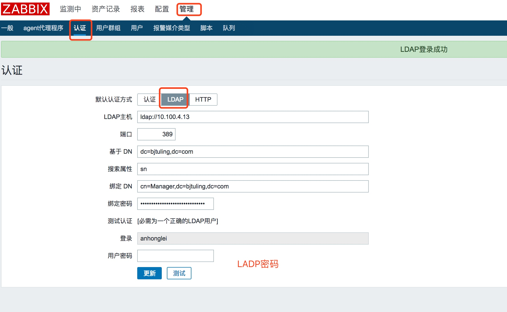

zabbix3.2/3.4 部署安装
zabbix官网：http://www.zabbix.com
zabbix下载地址：http://www.zabbix.com/download
zabbix下载地址：https://repo.zabbix.com/zabbix/3.2/rhel/7/x86_64/
zabbix监控模板：https://share.zabbix.com/search-by/tags?value=netkiller
部署流程
1. 选择Zabbix版本
https://www.zabbix.com/life_cycle_and_release_policy
2. 安装系统环境
yum install -y unixODBC unixODBC-devel net-snmp net-snmp-devel java-devel libssh2-devel OpenIPMI ipmitool
OpenIPMI-devel fping php-devel libevent-devel
安装php及组件
cd /data/source/
./sm
18,19
PHP安装bcmach
ln -s /usr/local/php-5.4.26 /usr/local/php
cd /data/source/
tar zxf php-5.4.26.tar.gz
cd /data/source/php-5.4.26/ext/bcmath
phpize
./configure --with-php-config=/usr/local/php/bin/php-config
make && make install
cd /data/source/php-5.4.26/ext/gettext/
phpize
./configure --with-php-config=/usr/local/php/bin/php-config
make && make install
cd /data/install/php-5.4.26/ext/ldap
phpize
cp -frp /usr/lib64/libldap* /usr/lib/
./configure --with-php-config=/usr/local/php/bin/php-config --with-ldap
make && make install
vi /home/server_config/php/php.ini.5.4
在910行处添加：
extension=bcmath.so
extension=gettext.so
extension=ldap.so
优化php.ini
cp /home/server_config/php/php.ini.5.4 /home/server_config/php/php.ini.5.4.default
sed -i "s/;date.timezone =/date.timezone = Asia\/Shanghai/g" /home/server_config/php/php.ini.5.4
sed -i "s#max_execution_time = 30#max_execution_time = 300#g" /home/server_config/php/php.ini.5.4
sed -i "s#post_max_size = 8M#post_max_size = 32M#g" /home/server_config/php/php.ini.5.4
sed -i "s#max_input_time = 60#max_input_time = 300#g" /home/server_config/php/php.ini.5.4
sed -i "s#memory_limit = 128M#memory_limit = 128M#g" /home/server_config/php/php.ini.5.4
#sed -i "/;mbstring.func_overload = 0/ambstring.func_overload = 2\n" /home/server_config/php/php.ini.5.4
mkdir /etc/php-fpm
ln -s /home/server_config/php-fpm/php-fpm.conf.5.4.26 /etc/php-fpm/php-fpm.conf
ln -s /home/server_config/php-fpm/php-fpm /etc/init.d/php-fpm
/etc/init.d/php-fpm restart
3. 安装和配置Zabbix服务器
下载地址：
https://sourceforge.net/projects/zabbix/files/ZABBIX%20Latest%20Stable/3.4.8/zabbix-3.4.8.tar.gz
groupadd -g 201 zabbix
useradd -u 201 -g zabbix -d /var/lib/zabbix -s /sbin/nologin -c "Zabbix System User" zabbix
cd /usr/local/src
wget https://sourceforge.net/projects/zabbix/files/ZABBIX%20Latest%20Stable/3.4.8/zabbix-3.4.8.tar.gz
tar zxf zabbix-3.4.8.tar.gz
cd zabbix-3.4.8
./configure --prefix=/usr/local/zabbix-3.4.8 --sysconfdir=/etc/zabbix --enable-server --enable-proxy --enable-agent --enable-ipv6 --with-mysql=/usr/local/mysql-5.7.20/bin/mysql_config --with-net-snmp --with-libxml2 --with-libcurl --with-openipmi --with-openssl --with-unixodbc --with-ldap --with-ssh2 --enable-java
make && make install
ln -s /usr/local/zabbix-3.4.8 /usr/local/zabbix
mkdir /var/log/zabbix
chown -R zabbix.zabbix /var/log/zabbix
创建zabbix数据库和用户
create database zabbix character set utf8;
grant all privileges on zabbix.* to zabbix@localhost identified by 'Zabbix@2016';
grant all privileges on zabbix.* to zabbix@'127.0.0.1' identified by 'Zabbix@2016';
导入zabbix数据库
use zabbix;
source /usr/local/src/zabbix-3.4.8/database/mysql/schema.sql;
source /usr/local/src/zabbix-3.4.8/database/mysql/images.sql;
source /usr/local/src/zabbix-3.4.8/database/mysql/data.sql;
将原数据库导入即可
修改配置
cp /etc/zabbix/zabbix_server.conf /etc/zabbix/zabbix_server.conf.default
配置server.conf
vi /etc/zabbix/zabbix_server.conf
LogFile=/var/log/zabbix/zabbix_server.log
DBHost=localhost
DBName=zabbix
DBUser=zabbix
DBPassword=Zabbix@2016
DBSocket=/tmp/mysql3306.sock
DBPort=3306
StartPollers=160
StartTrappers=20
StartPingers=100
StartDiscoverers=120
MaxHousekeeperDelete=5000
CacheSize=1024M
StartDBSyncers=16
HistoryCacheSize=1024M
TrendCacheSize=1024M
AlertScriptsPath=/etc/zabbix/alertscripts
FpingLocation=/usr/sbin/fping
LogSlowQueries=1000
cp /etc/zabbix/zabbix_agentd.conf /etc/zabbix/zabbix_agentd.conf.default
配置agentd.conf
vi /etc/zabbix/zabbix_agentd.conf
LogFile=/var/log/zabbix/zabbix_agentd.log
EnableRemoteCommands=0
Server=127.0.0.1,172.18.100.232
StartAgents=8
ServerActive=172.18.100.232:10051
Hostname=zabbix.yg.com
Timeout=30
Include=/etc/zabbix/zabbix_agentd.conf.d/
UnsafeUserParameters=1
迁移时将/etc/zabbix目录覆盖即可
增加系统&开机配置
cp /usr/local/src/zabbix-3.4.8/misc/init.d/fedora/core/zabbix_* /etc/init.d/
chmod 755 /etc/init.d/zabbix_*
sed -i "s#BASEDIR=/usr/local#BASEDIR=/usr/local/zabbix/#g" /etc/init.d/zabbix_server
sed -i "s#BASEDIR=/usr/local#BASEDIR=/usr/local/zabbix/#g" /etc/init.d/zabbix_agentd
chkconfig --add zabbix_agentd
chkconfig --add zabbix_server
chkconfig zabbix_agentd on
chkconfig zabbix_server on
启动zabbix
/etc/init.d/zabbix_server start
/etc/init.d/zabbix_agentd start
配置nginx WEB访问
mkdir -p /data/www
cd /usr/local/src/zabbix-3.4.8
cp -r ./frontends/php/ /data/www/zabbix
chown -R nobody.nobody /data/www/zabbix/
**配置nginx**
cd /usr/local/nginx/conf/vhosts
cp test.conf.example zabbix.bjtuling.com.conf
vi zabbix.bjtuling.com.conf
server {
listen 80;
server_name zabbix.bjtuling.com;
index index.php index.html index.htm;
root /data/www/zabbix;
location ~ /.svn/ {
deny all;
}
location ~ ^.*\.(htaccess|zip|gz|tgz)$ {
deny all;
}
location ~* ^/(attachments|images|upload)/.*\.(php|php5)$ {
deny all;
}
location ~ .*\.(gif|jpg|jpeg|png|bmp|swf)$ {
expires 7d;
}
location ~ .*\.(js|css)?$ {
expires 24h;
}
location ~ .*\.php?$ {
fastcgi_pass 127.0.0.1:9000;
fastcgi_index index.php;
fastcgi_param SCRIPT_FILENAME $document_root$fastcgi_script_name;
#fastcgi_param HTTPS on;
include fastcgi_params;
}
}
迁移：将vhosts目录下所有配置拷贝过来即可
开启防火墙
${IPTABLES} -A INPUT -p tcp --dport 10050 -j ACCEPT
${IPTABLES} -A INPUT -p tcp --dport 10051 -j ACCEPT
迁移时，拷贝原服务器/home/server_config/iptables_rules/配置
配置zabbix web页面
忽略
解决zabbix中文乱码
cd /usr/local/src
wget http://bjqw-dl.bjtuling.com:8180/zabbix/simkai.ttf
cp simkai.ttf /data/www/zabbix/fonts/
sed -i 's/DejaVuSans/simkai/g' /data/www/zabbix/include/defines.inc.php
部署Client端
1. 下载&安装
cd /usr/local/src
wget http://netix.dl.sourceforge.net/project/zabbix/ZABBIX%20Latest%20Stable/3.0.4/zabbix-3.0.4.tar.gz
tar zxf zabbix-3.0.4.tar.gz
cd zabbix-3.0.4
./configure --prefix=/usr/local/zabbix-3.0.4 --sysconfdir=/etc/zabbix --enable-agent
make && make install
ln -s /usr/local/zabbix-3.0.4 /usr/local/zabbix
mkdir /var/log/zabbix
chown -R zabbix.zabbix /var/log/zabbix
cp /etc/zabbix/zabbix_agentd.conf /etc/zabbix/zabbix_agentd.conf.default
cp misc/init.d/fedora/core/zabbix_agentd /etc/init.d/
sed -i "s#BASEDIR=/usr/local#BASEDIR=/usr/local/zabbix/#g" /etc/init.d/zabbix_agentd
chmod 755 /etc/init.d/zabbix_agentd
2. 修改配置文件
vi /etc/zabbix/zabbix_agentd.conf
LogFile=/var/log/zabbix/zabbix_agentd.log
EnableRemoteCommands=0
Server=120.26.44.156
StartAgents=8
ServerActive=120.26.44.156:10051
Hostname=zabbix.play800.cn
Timeout=30
Include=/etc/zabbix/zabbix_agentd.conf.d/
UnsafeUserParameters=1
3. 增加开机启动
chkconfig --add zabbix_agentd
chkconfig zabbix_agentd on
/etc/init.d/zabbix_agentd start
自动化安装脚本
1. zabbix客户端安装脚本
cd /usr/local/src ;wget http://bjqw-dl.bjtuling.com:8180/zabbix/init_scripts/init_zabbix_agent_3.2.6.sh ; sh init_zabbix_agent_3.2.6.sh
zabbix客户端相关脚本
1. 监控nginx
zabbix server 导入nginx模板
zabbix agent 配置
mkdir /etc/zabbix/scripts/ ;
wget -O /etc/zabbix/scripts/ngx_status.sh http://bjqw-dl.bjtuling.com:8180/zabbix/zabbix_scripts/ngx_status.sh;
wget -O /etc/zabbix/zabbix_agentd.conf.d/userparameter_nginx.conf http://bjqw-dl.bjtuling.com:8180/zabbix/zabbix_agentd.conf.d/userparameter_nginx.conf;
chown -R zabbix.zabbix /etc/zabbix/;
chmod 755 /etc/zabbix/scripts/ngx_status.sh;
/etc/init.d/zabbix_agentd restart
一句话安装脚本
cd /usr/loca/src;wget http://bjqw-dl.bjtuling.com:8180/zabbix/init_scripts/init_zabbix_ngx_status.sh;sh init_zabbix_ngx_status.sh
2. 监控mysql多实例
zabbix server 导入mysql监控模板
zabbix agent 配置
yum install -y php php-mysql;
chmod +s /bin/netstat;
mkdir /etc/zabbix/scripts;
cd /etc/zabbix/scripts;
wget http://bjqw-dl.bjtuling.com:8180/zabbix/zabbix_scripts/get_mysql_stats_wrapper.sh;
wget http://bjqw-dl.bjtuling.com:8180/zabbix/zabbix_scripts/mysql_low_discovery.sh;
wget http://bjqw-dl.bjtuling.com:8180/zabbix/zabbix_scripts/ss_get_mysql_stats.php;
cd /etc/zabbix/zabbix_agentd.conf.d;
wget http://bjqw-dl.bjtuling.com:8180/zabbix/zabbix_agentd.conf.d/userparameter_percona_mysql.conf;
chown -R zabbix.zabbix /etc/zabbix/;
chmod 755 /etc/zabbix/scripts/*;
/etc/init.d/zabbix_agentd restart
一句话安装脚本
cd /usr/local/src;wget http://bjqw-dl.bjtuling.com:8180/zabbix/init_scripts/init_zabbix_mysql_multi_status.sh;sh init_zabbix_mysql_multi_status.sh
3. 监控tomcat多实例
zabbix server 导入tomcat监控模板
zabbix agent 配置
mkdir /etc/zabbix/scripts;
cd /etc/zabbix/scripts;
wget http://bjqw-dl.bjtuling.com:8180/zabbix/zabbix_scripts/jmx_discovery.sh;
cd /etc/zabbix/zabbix_agentd.conf.d;
wget http://bjqw-dl.bjtuling.com:8180/zabbix/zabbix_scripts/userparameter_tomcat.conf;
chown -R zabbix.zabbix /etc/zabbix/;
chmod 755 /etc/zabbix/scripts/*;
/etc/init.d/zabbix_agentd restart
一句话安装脚本
cd /usr/local/src;wget http://bjqw-dl.bjtuling.com:8180/zabbix/init_scripts/init_zabbix_tomcat_multi_status.sh;sh init_zabbix_tomcat_multi_status.sh
4. 监控redis多实例
在zabbix后台，导入模板
下载脚本，并重启zabbix_agentd
chmod +s /bin/netstat;
mkdir /etc/zabbix/scripts;
cd /etc/zabbix/scripts;
wget http://bjqw-dl.bjtuling.com:8180/zabbix/zabbix_scripts/redis_stats.sh;
wget http://bjqw-dl.bjtuling.com:8180/zabbix/zabbix_scripts/redis_discovery.py;
cd /etc/zabbix/zabbix_agentd.conf.d;
wget http://bjqw-dl.bjtuling.com:8180/zabbix/zabbix_scripts/redis_status.conf;
chown -R zabbix.zabbix /etc/zabbix/;
chmod 755 /etc/zabbix/scripts/*;
/etc/init.d/zabbix_agentd restart
一句话安装脚本
cd /usr/local/src;wget http://bjqw-dl.bjtuling.com:8180/zabbix/init_scripts/init_zabbix_redis_status.sh;sh init_zabbix_redis_status.sh
5. 监控mongodb
在zabbix后台，导入模板
下载脚本，并重启zabbix_agentd
chmod +s /bin/netstat;
mkdir /etc/zabbix/scripts;
cd /etc/zabbix/zabbix_agentd.conf.d;
wget http://bjqw-dl.bjtuling.com:8180/zabbix/zabbix_scripts/userparameter_mongodb.conf;
chown -R zabbix.zabbix /etc/zabbix/;
/etc/init.d/zabbix_agentd restart
一句话安装脚本
cd /usr/local/src;wget http://bjqw-dl.bjtuling.com:8180/zabbix/init_scripts/init_zabbix_mongodb_status.sh;sh init_zabbix_mongodb_status.sh
6. 监控io
cd /usr/local/src;wget http://bjqw-dl.bjtuling.com:8180/zabbix/init_scripts/init_zabbix_iostat_status.sh;sh init_zabbix_iostat_status.sh
监控JVM相关
yum install -y java-devel zabbix-java-gateway
systemctl start zabbix-java-gateway.service
systemctl enable zabbix-java-gateway.service
vim /etc/zabbix/zabbix_java_gateway.conf
LISTEN_IP="0.0.0.0"
LISTEN_PORT=10052
PID_FILE="/var/run/zabbix/zabbix_java.pid"
START_POLLERS=20
vim /etc/zabbix/zabbix_server.conf
JavaGateway=192.168.89.204
JavaGatewayPort=10052
StartJavaPollers=20
zabbix故障排查
- Too many processes on Zabbix server
配置-模板-Template_Linux
Configuration-->Templates找到Template_Linux点该行的 Triggers选择：Too many processes on {HOSTNAME}，表达式修改为：
{Template OS Linux:proc.num[].avg(5m)}>500
2. "cannot send list of active checks to []: host [] not found"
解决办法:
因为web端上被监控端的主机名和zabbix_agentd.conf中的Hostname名字不一样,改为一样的即可
参考文档
中小企业监控体系构建实战：微信 赵舜东 高效运维
使用zabbix监控TCP连接状态：http://blog.csdn.net/u013636377/article/details/51611670
- zabbix模板：https://share.zabbix.com/search-by/tags?value=netkiller
- org.json.JSONException: No value for jmx_endpoint
清理zabbix其他YUM源（特别是高版本）
rpm -i http://repo.zabbix.com/zabbix/3.2/rhel/7/x86_64/zabbix-release-3.2-1.el7.noarch.rpm
yum clean all
yum install zabbix-java-gateway
systemctl restart zabbix-java-gateway.service
tail -fn200 /var/log/zabbix/zabbix_java_gateway.log
- Error connecting to database: Connection refused
排查过程：
1.检查zabbix_server.conf配置文件，发现数据库配置也是正确的，但就是报上面的错误
2.最后通过网上搜索，发现
******/zabbix/conf/zabbix.conf.php
文件里面也有数据库的配置不正确
- 初始admin 密码
use zabbix;
select * from users;
select userid,passwd from users;
#生成一个MD5加密的密码，这里密码设置的是zabbix
select md5('zabbix');
update users set passwd='5fce1b3e34b520afeffb37ce08c7cd66' where userid = '1';
#或者直接使用update users set passwd=md5("redhat") where userid='1';
flush privileges;
- LDAP
zabbix不会把ldap的用户同步过了，你要登录，得先在zabbix上创建和ldap内同名的用户才行

LDAP host：访问DC的地址。格式：ldap://ip地址
Port：默认389
Base DN: dc=tencent,dc=com,也就是域名(tencent.com)
Search attribute: uid，属性值，网上有填sAMAccountName。
Bind DN： cn=Admin, ou=People, dc=tencent, dc=com。 cn就是在DC中创建的LDAPuser用户， ou就是LDAPuser属于哪个ou，dc=tencent和dc=com不在解释。
Bind password：xxxx ，改密码为LDAPuser用户的密码
Login：Admin
User password：在DC中创建Admin用户的密码